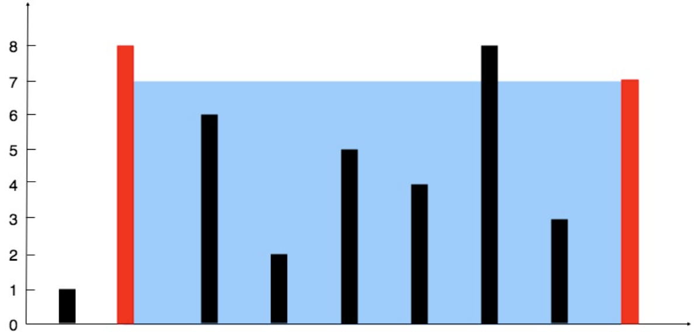

0011-container with most water
问题描述
给定n个非负整数a1,a2,...,an。每个数代表坐标中的一个点(i, ai)。在坐标内画n条垂直线，垂直线i的两个端点分别为(i,ai)和(i,0)。找出其中的两条线，使得它们与x轴共同构成的容器可以容纳最多的水。
示例1
输入: [1,8,6,2,5,4,8,3,7]

输出: 49
示例2
输入: [1,1]
输出: 1
示例3
输入: [4,3,2,1,4]
输出: 16
示例4
输入: [1,2,1]
输出: 2
提示:
- n = height.length
- 2 <= n <= 3 * 104
- 0 <= height[i] <= 3 * 104
代码
class Solution:
def maxArea(self, height: List[int]) -> int:
l, r, res = 0, len(height) - 1, 0
while l < r:
res = max(res, (r - l) * min(height[r], height[l]))
if height[l] < height[r]: l += 1
elif height[l] > height[r]: r -= 1
else: l, r = l + 1, r - 1
return res
分析
-
使用双指针法搜索盛最多水时的容器边界。搜索过程中进行剪枝。
-
考虑
l,r指针分别指向容器左右边界，对应整个搜索空间。- 且height[l] < height[r]:
- 此时若
r指针左移，则水面高度不大于hright[l]且水面宽度相对于(l,r)布局减小。故此时r指针左移无法搜索到更优边界。 - 因此此时尝试
l指针右移。
- 此时若
- height[l] > height[r]的情况可做对称考虑。
- 若height[l] == height[r]:
- (l,r)布局优于(l,r-1)布局，(l,r)布局优于(l+1, r)布局。
- 因此此时尝试(l+1, r-1)布局。即同时左指针右移、右指针左移。
- 且height[l] < height[r]:
-
移动长边对应的指针，不可能获得更优布局。移动短边对应指针，可能从较好布局进入较差布局，但也可能从较差布局进入较好布局。由于设置了变量用于记忆当前最优布局的盛水量，因此不必担心会陷入较差布局。由此，保持了向全局最优布局迈进的可能性。